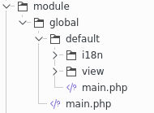

Software Craftsmanship
Introduction
The "software craftsmanship" movement aims to revalue our profession by assimilating our activity to that of the craft industry.As a software craftsman, it is also important that an application runs properly if it is well designed and easily maintained.
With this in mind, the new version of the Mkframework Builder hosts a new family of application templates and generators adopting this philosophy.
Presentation
These application templates are different on these points:- use of hexagonal architecture
- multi-lingual
- accompanied by their unit tests
- heritage / multi-level (parent module inheritance module)
Hexagonal architecture

To do this, instead of putting the code directly into the module, we create a business class that will contain our business code
For example for a CRUD we have a business class taking in its constructor these famous links
<?php
class business_crudUsers extends business_abstract {
protected $_oModel;
protected $_oAuth;
protected $_oI18n;
protected $_oValid;
protected $_tColumn = array('login','password','groups_id',);
public function __construct(interface_model $oModel_, interface_i18n $oI18n_, interface_valid $oValid_) {
$this->_oModel = $oModel_;
$this->_oI18n=$oI18n_;
$this->_oValid=$oValid_;
}
}
Then a method for each action, for example to edit an element:
public function updateItem($id_, $tParam_) {
$oValid = $this->getCheck($tParam_);
if (!$oValid->isValid()) {
return $this->sendReturn(false, array('tError' => $oValid->getListError()));
}
$oUsers_=$this->_oModel->findByID($id_);
foreach ($this->_tColumn as $sColummn) {
$oUsers_->$sColummn = $tParam_[$sColummn];
}
$this->_oModel->update($oUsers_);
return true;
}
And in the module to call it:
private function processSave() {
//si ce n'est pas une requete POST on ne soumet pas
if (!_root::getRequest()->isPost()) {
return null;
}
$oPluginXsrf = new plugin_xsrf();
//on verifie que le token est valide
if (!$oPluginXsrf->checkToken(_root::getParam('token'))) {
return array('token' => $oPluginXsrf->getMessage());
}
$tParams = _root::getRequest()->getParams();
$oBusiness = new business_crudUsers(model_Users::getInstance(), _root::getI18n(), new plugin_sc_valid() );
$iId = _root::getParam('id', null);
if ($iId == null) {
if (false === $oBusiness->insertItem(new row_Users, $tParams)) {
return $oBusiness->getReturn()->getData('tError');
}
} else {
if (false === $oBusiness->updateItem(_root::getParam('id'), $tParams)) {
return $oBusiness->getReturn()->getData('tError');
}
}
//une fois enregistre on redirige (vers la page liste)
_root::redirect('global_Users::list');
}
Multi language
The application includes language files at its root
- data / i18n / en.php
But also in each module generated by inheriting
for example

Unit tests
Each generation including both a business class (hexagonal architecture) as well as the associated unit tests
This facilitates the unit tests, here for example (generated by the builder)
public function test_insertItemShouldReturnErrorsMissing() {
$oMockModel = $this->getMock('interface_model');
$oBusiness = new business_crudUsers($oMockModel,new plugin_i18nFake() );
$tParam = array();
$tColumn = array('login','password','groups_id');
foreach ($tColumn as $sColumn) {
$tParam[$sColumn] = null;
}
$bReturn = $oBusiness->insertItem(new stdclass(), $tParam);
$this->assertEquals(false, $bReturn);
$tError = array();
foreach ($tColumn as $sColumn) {
$tError[$sColumn] = array('{errorIsEmpty}');
}
$this->assertEquals($tError, $oBusiness->getReturn()->getData('tError'));
}
Note: Like all the builder generates, it is not engraved in the marble it is a base of work that it is important for you to enrich / adapt to your needs
Inheritance / multi-level
VHere you can manage the inheritance of modules, for example to have a "private" module in which one
- Enable authentication,
- create a layout
- load the menu (s)
And so all the modules inheriting from this parent module, would benefit from this: no need to duplicate your code before ()
You also have a rights management inheritance: you have at the root a language file, and then in each module of the languages ??files admitting it.